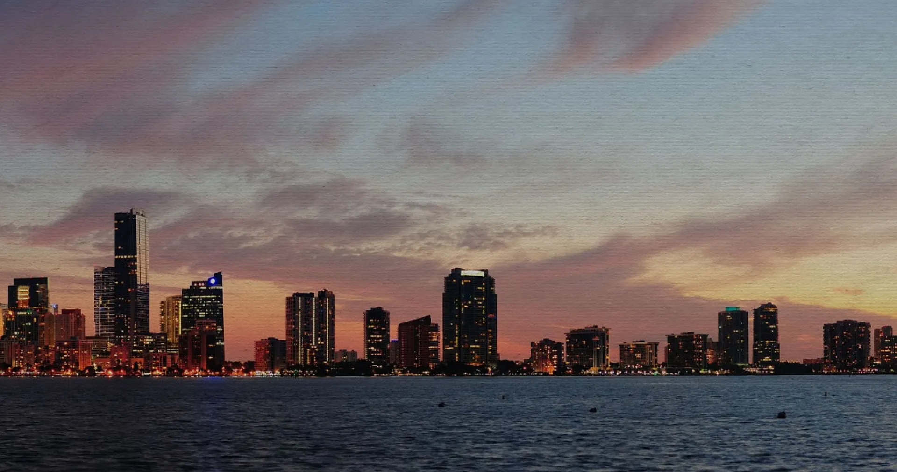

Open EB5 is a USCIS-approved EB-5 Regional Center based in Texas. We help foreign investors qualify for U.S. permanent residency through job-creating real estate projects.
Datos reales medidos en el HTML vivo y en el filesystem (openeb5.com, 12 Jun 2026). El "actual" es lo que el visitante recibe hoy. El "propuesto" es lo que sirve la sección de arriba.
Este mockup está en la misma URL que el audit, así puedes abrirlo en otra pestaña y compararlo con el home actual abierto al lado.
OpenEB5-Slide-08.jpg servida en WebP. La misma foto que el cliente ya eligió para el slider.sr7.js + tptools.js ya no se cargan. El dequeue del child theme (§9 nuevo, a añadir) lo gobierna con is_front_page().<picture>. Mobile ahorra el 92% del peso (304 KB → 24 KB).<img> lleva fetchpriority="high" y loading="eager" → el browser arranca la descarga antes de procesar el resto del HTML.Las opciones son visuales — me respondes por chat con tu elección + los ajustes si vas por B.